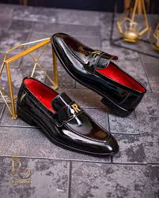

GIVENCHY
Catalogo
Vestidos de Fiesta
Vestidos de Gala
Trajes de Gala
Vestidos de Coctel
Calzado de Caballero
Calzado de Dama
Calzado para Caballero

-Calzado de material de Charol negro
-Tallas disponibles, pueden ser hechos
a la medida
-Con una plaquita dorada a un lado

-Calzado de material de Charol negro
-Tallas disponibles, pueden ser hechos
a la medida
-Con plantilla color roja
-Diseño dorado en el frente
-Mocasines de material de Cuero negro
-Tallas disponibles, pueden ser hechos
a la medida

-Calzado de material de Cuero negro
-Tallas disponibles, pueden ser hechos
a la medida
-Con cintas negras si diseño alguno
-Suela cocida

-Calzado de material de Cuero negro
-Tallas disponibles, pueden ser hechos
a la medida
-Sin diseños, con cintas color negro
-Cocidos a todo el alrededor